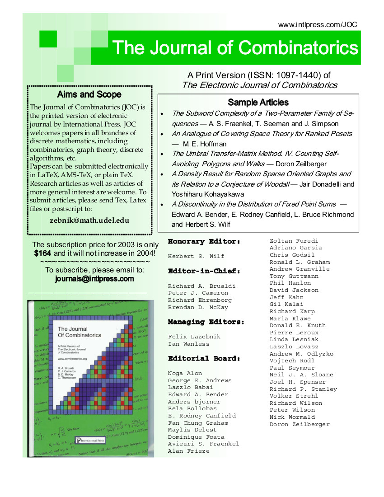

Pesquisas:
|
Interesses:
|
Escrevinhações:
|

parte dos links abaixo
estão quebrados, estou arrumando-os conforme tenho tempo disponivel. se
deseja algum dos textos solicite-o por email.
Mestrado

Doutorado

Notas de seminários apresentados em disciplinas:
Outras notas:
Probabilidade discreta e Algoritmos probabilísticos .
Docência
Notas de aula:
Introdução a Probabilidade
Algoritmos probabilísticos:
- Espaços de probabilidade discretos
- Algoritmos aleatorizados
- Variáveis aleatórias discretas
- Computação probabilística
- Desalatorização
Criptografia.
Aritmética.
Matemática Discreta.
Teoria dos Grafos.
Teoria Espectral de Grafos.
Lógica básica.
Publicações

|

|

|
- Ramsey minimal graphs
(with Béla Bollobás, Yoshi Kohayakawa and Richard Schelp)(pdf).
- Searching in random partially ordered sets (Extended Abstract).
(with Renato Carmo, Yoshi Kohayakawa and Eduardo Laber)
(preliminary version-dvi).
- A density result for random sparse graphs and its relation to a conjecture of Woodall.
(with Yoshi Kohayakawa) (pdf).
- Resultados de Ramsey e de densidade para grafos pseudo-aleatórios esparsos. (pdf).
- Searching in random partially ordered sets (with Renato Carmo, Yoshi Kohayakawa and Eduardo Laber) (preliminary version-ps).
- A note on size-Ramsey number of long subdivisions of graphs
(with Penny Haxell and Yoshi Kohayakawa) (Preliminary version pdf).
- Evasividade de Propriedades de Grafos
- Caracterizações de buscas em hipergrafos (com Silvio Boss e André Guedes) (pdf)
- Deterministic and efficient minimal perfect hashing schemes (with Leandro Zatesko) (pdf)
-
Engenharia reversa em Jogos de Minoria, (com Amaury S. Amaral
(Puc-SP), Fernando F. Ferreira (USP))